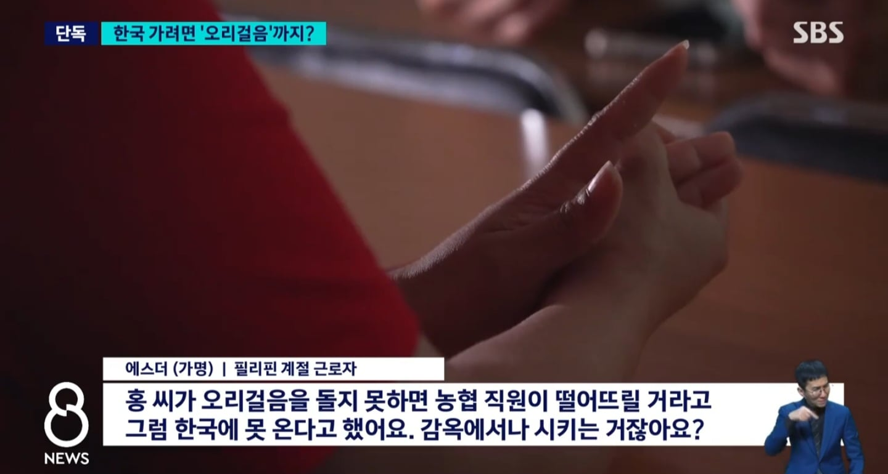
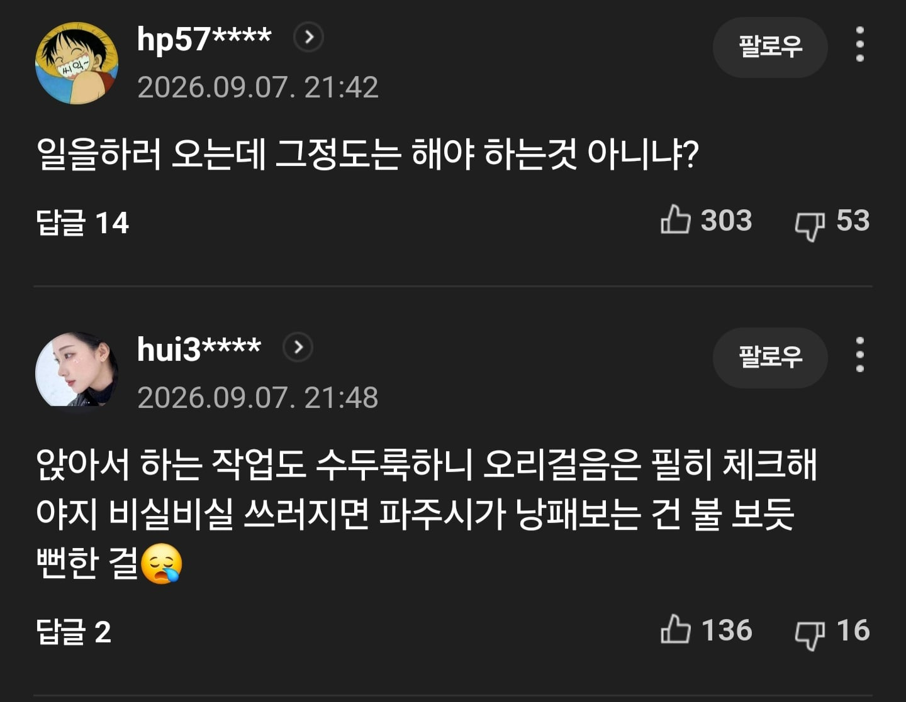
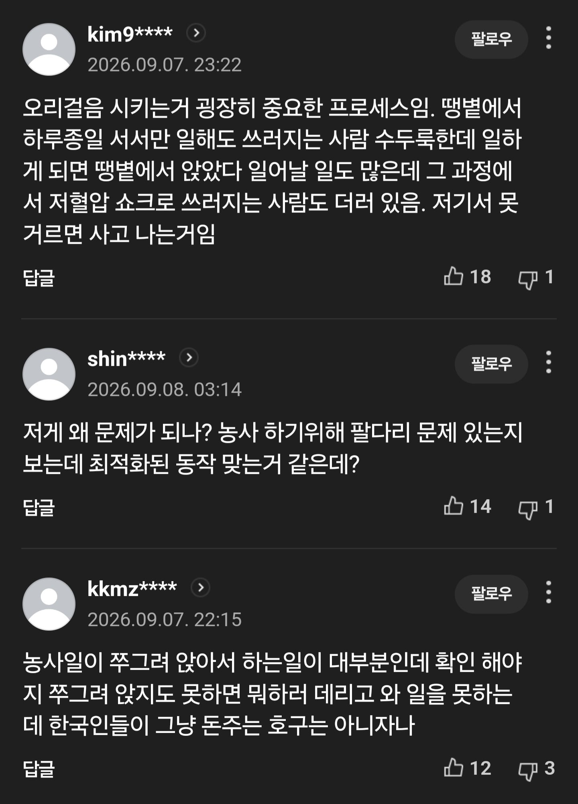

ㅇㅈ
꼬우면 오지마라 할게 아니고 충분히 설명하고 진행했으면 별 문제 없었을거같은데
보통 저게 벌줄때 많이 하니까 모욕감을 느낀다고 하는건가
나도 오리걸음 존나못하는데 ㅋㅋㅋ
훈련소에서도 다른건 다버티겠는데 오리걸음시키는건 못하겠더라 시발ㅋㅋ
총을 위로 들고 하래서 뭔씹소린가햇음ㅋㅋ
최적화 맞다
못하면 다른일 찾아야지
꼬우면 오지마이씨
그래그래 아주 머리꼭대기에 서라~
현장에서 필요한 체력적 부분 테스트 한건데 이걸 외노자에 대한 차별인것처럼 이야기 할 필요가 있나?
불쌍한 외노자들... 오기 싫은 외노분들은 오지 마시길
파주시 이 나쁜넘들 ㅜㅜ 외노님들 심기를 거슬려?
동남아애들이 자존심은 드럽게 쎄가지고 저런거 납득을 못한다더라
즈그들 나라 경찰은 더한데 거기엔 찍소리 못함 ㅋㅋㅋ
사전에 설명안한게 문제라고본다
별도로 체력테스트(오리걸음) 안내 있었으면 그러려니 싶은데, 면접장에서 다짜고짜 시킨거면 면접 진행한 놈들이 병신 맞지....
막상 와서 아파서 (농사) 일은 못해요 한사람들이 꽤 있었나보네
그.. 누가 목마른사람이죠..?
난 또 뭐라고
근데 사전 설명은 상세히 했어야 했다고 생각해
에스더 이 썅년아 남의돈 벌어먹기가 한국인은 쉬운줄아냐? 개좇같은년이
몇바퀴나 시키는데 체력검정은 필요직군은 하자나
못할 종목은 아니라고 보는데 공지가 덜됐나?
인터뷰를 보면 공지 안한것도 아닌거 같은데
사진보니까 운동복장도 아니고 캐주얼 복장이네.. 면접보러와서 시키는 모양인데 공지없이 저렇게 시키는게 정상이냐? 한국인한테 저랬으면 갑질이다 ㅈ소다 욕하는 애들이 저기에는 하기싫으면 꺼지라느니 오지말라느니 진짜 인종차별이 이런거지.. 쓸모있고 말고 가 문제가 아니라 외국인 노동자에 대한 존중이 전혀 없는게 문제다. 존중이 눈꼽만큼이라도 있으면 체육관을 대절하거나 운동장 빌려서 체력장을 했겠지